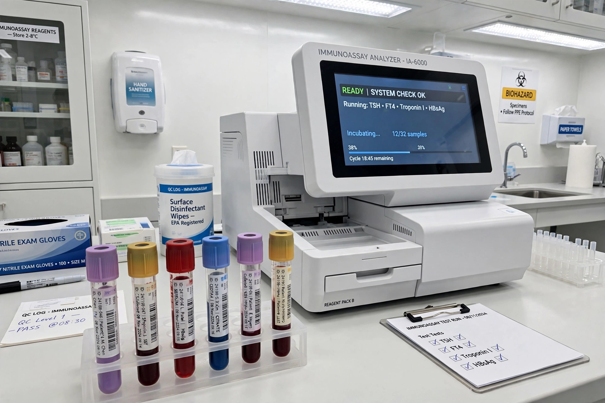

Rheumatoid factor
| Rheumatoid factor | |
|---|---|
| Type | Autoantibody (usually IgM) |
| Target | Fc portion of IgG |
| Associated with | Rheumatoid arthritis, Sjögren syndrome, mixed cryoglobulinemia |
| Test | Latex agglutination, nephelometry, ELISA |
| Reference range | Typically < 14–20 IU/mL (method-dependent) |

Rheumatoid factor (RF) is an autoantibody first described by the Norwegian physician Erik Waaler (1940) and characterised by Harry Rose and colleagues (1948). It is directed against the Fc portion of IgG antibodies. Rheumatoid factor and IgG join to form immune complexes that contribute to the disease process in rheumatoid arthritis (RA) and other conditions.
Measurement
RF is usually measured as the IgM class. Traditional methods used agglutination of IgG-coated latex particles or sheep red cells (the Waaler–Rose test); modern laboratories employ nephelometry, turbidimetry or ELISA, reporting values in international units per millilitre. Isotype-specific assays for IgA and IgG RF exist but are less commonly used.
Interpretation
RF is found in roughly 70–80% of patients with rheumatoid arthritis at some point in their disease, though sensitivity is lower in early RA. High titres correlate with more severe erosive disease, extra-articular manifestations such as rheumatoid nodules, and poorer prognosis. The test is not specific: RF occurs in other autoimmune and chronic inflammatory conditions and in a proportion of healthy people — about 5% of young adults and up to 10–25% of the elderly — so it must be interpreted with the clinical picture. The antibody anti-cyclic citrullinated peptide (anti-CCP/ACPA) is substantially more specific for RA and is used alongside RF in the 2010 ACR/EULAR classification criteria. Patients whose RA is RF-negative (and ACPA-negative) are termed "seronegative".
Conditions with positive RF
- Rheumatoid arthritis
- Sjögren syndrome (frequently high titres)
- Mixed cryoglobulinemia, often linked to hepatitis C infection
- Systemic lupus erythematosus and other connective-tissue diseases
- Chronic infections (subacute bacterial endocarditis, tuberculosis, hepatitis)
- Some malignancies and chronic liver/lung disease
History
Waaler reported the phenomenon in 1940 in Oslo; Rose and colleagues described it independently in New York in 1948, hence "Waaler–Rose" for the classic sheep-cell test. RF was the first autoantibody applied widely in routine rheumatology and helped establish the autoimmune model of RA.